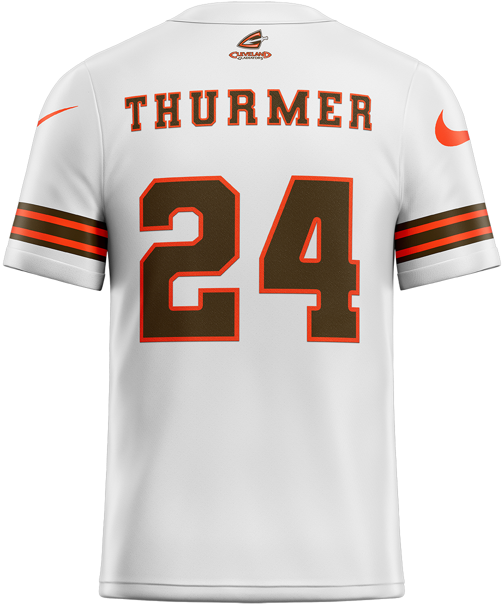
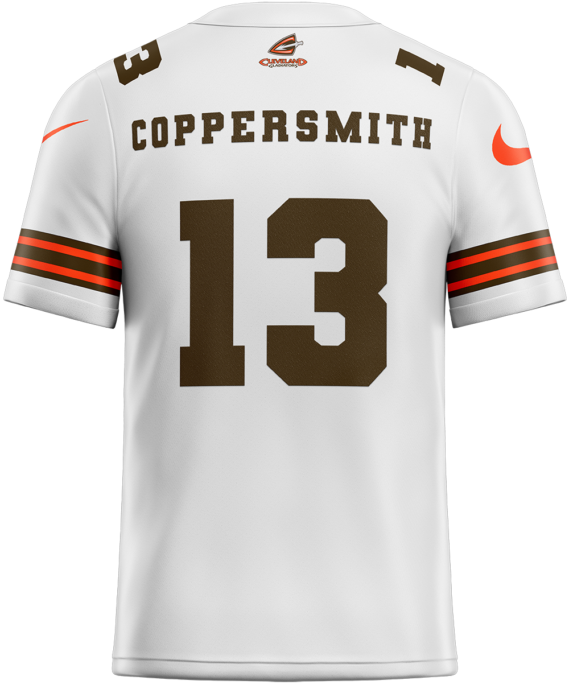
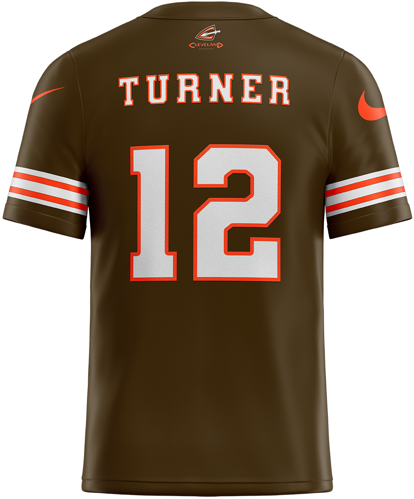

The Cleveland Gladiators, a formidable force in professional fantasy football, proudly represent the GLFL as a distinguished member of the league's Central division. Established in 2012, the team has consistently showcased a tenacious spirit and strategic prowess in the pursuit of fantasy glory.
Headquartered in Mequon, Wisconsin, the Gladiators, currently under the astute leadership of General Manager Josh Thurmer, have been a cornerstone of the GLFL since its inception. As seasoned contenders, the team's journey has seen them clinch coveted spots in the Lakefront Bowl twice, in 2014 and 2016. Despite their valiant efforts, both appearances ended in heartbreak, with the championship eluding their grasp.
The Cleveland Gladiators continue to be a force to be reckoned with, each season presenting a fresh opportunity to rewrite their fantasy legacy and emerge triumphant in the competitive landscape of the GLFL Central division.
| Cleveland Gladiators |
|
| Established | 2012 |
| Headquarters | Mequon, WI |
| Team Colors | |
| Division Affiliations | |
|---|---|
| Central | 2012-2017, 2019-Present |
| East | 2018 |
| Personnel | |
| General Manager | Josh Thurmer |
| Team History | |
| Cleveland Gladiators (2012-Present) | |
| Championships | |
| Lakefront Bowl (0) | |
| Conference (2) | 2014, 2016 |
| Division (4) | 2014, 2016, 2017, 2022 |
| Playoffs (8) | 2012, 2014, 2016, 2017, 2021, 2022, 2023, 2024 |
| Winning Seasons (6) | 2012, 2014, 2016, 2017, 2021, 2022 |
Cleveland Gladiators |
|
The Cleveland Gladiators are one of the GLFL’s most storied franchises, known for early dominance, multiple division titles, and two Lakefront Bowl appearances during the mid-2010s. Under longtime GM Bruce Coppersmith, Cleveland established itself as a perennial contender before transitioning to a new era under Josh Thurmer in 2024.
The Gladiators debuted in 2012 with an 8-6 record under GM Eryn Turner, earning a playoff berth but falling in the opening round to Los Angeles. Following a GM change, Coppersmith took the reins in 2013 and led Cleveland through its golden era. After a rebuilding year, the team surged to a 10-3 record in 2014, capturing the Central Division title and advancing to its first Lakefront Bowl Lakefront Bowl, where they fell to Milwaukee, 118-141. Two years later, Cleveland returned to the title stage, defeating Milwaukee in the semifinals before losing to Miami in the 2016 Lakefront Bowl.
From 2014 to 2017, Cleveland claimed three division championships and appeared in three postseasons, including a 2017 campaign that earned Coppersmith GM of the Year honors. However, playoff heartbreak remained a theme, as the team fell short in every finals appearance. The Gladiators’ consistency wavered after 2018, with only one playoff win across the next several years despite multiple postseason berths in 2021, 2022, and 2023.
A major turning point came in 2024, when Josh Thurmer assumed GM duties. Cleveland finished 7-7 and returned to the playoffs, though they were eliminated in the first round by Los Angeles in a high-scoring clash. Despite the loss, the season was highlighted by Ja’Marr Chase capturing league MVP honors, marking a bright spot in a transitional year.
With five division championships, two Lakefront Bowl appearances, and a reputation for strong rosters, the Gladiators remain one of the league’s cornerstone franchises. The Thurmer era begins with high expectations, as Cleveland looks to finally capture the elusive title that slipped away during its dominant mid-2010s run.
Dive into the rich history of the Cleveland Gladiators as we meticulously document each season from their inaugural campaign in 2012 to the present day. This comprehensive list unveils the season-by-season records of the Gladiators franchise, chronicling their journey through regular and postseason battles. Delve into the accolades, league awards, and the guiding hands of their esteemed General Managers, providing a captivating narrative of the Gladiators' enduring pursuit of fantasy football excellence.
| Lakefront Bowl Champions | Conference Champions | Division Champions |
| Year | Div | W | L | Postseason | Awards | GM |
|---|---|---|---|---|---|---|
| 2012 | Central | 8 | 6 | Wild Card vs Los Angeles 91-98 L | Turner | |
| 2013 | Central | 6 | 8 | Coppersmith | ||
| 2014 | Central | 10 | 3 | Divisonal Playoffs vs Los Angeles 134-90 W Lakefront Bowl vs Milwaukee 118-141 L |
||
| 2015 | Central | 6 | 7 | |||
| 2016 | Central | 9 | 4 | Divisonal Playoffs vs Milwaukee 118-98 W Lakefront Bowl vs Miami 110-155 L |
||
| 2017 | Central | 10 | 3 | Divisonal Playoffs vs Philadelphia 105-138 L | GMoY | |
| 2018 | East | 6 | 8 | |||
| 2019 | Central | 6 | 7 | |||
| Season Canceled | ||||||
| 2021 | Central | 8 | 6 | Wild Card vs Milwaukee 90-128 L | Coppersmith | |
| 2022 | Central | 8 | 6 | Wild Card vs Cedar Rapids 143-103 W Divisonal Playoffs vs Northern Arizona 112-162 L |
||
| 2023 | Central | 7 | 7 | Wild Card vs Los Angeles 147-175 L | ||
| 2024 | Central | 7 | 7 | Wild Card vs Los Angeles 148-226 L | MVP | Thurmer |
| 2025 | Central | 6 | 8 | |||
| Season Record | 97 | 80 | ||||
| Playoff Record | 3 | 8 | ||||
| Total Record | 100 | 88 | ||||
Throughout the Cleveland Gladiators’ history, several General Managers have left an indelible mark on the franchise. Eryn Turner, the inaugural GM in 2012, laid the foundation with a playoff appearance. Bruce Coppersmith followed in 2013, leading the team to sustained success, including multiple division and conference championships. In 2024, Josh Thurmer took the reins, bringing a fresh perspective and a history of success across different leagues. His appointment marks a new chapter as the Gladiators continue their quest for the elusive Lakefront Bowl.
| General Manager | Year | W | L | W% | GMoY | Lakefront Bowl Champs | Conf. Champs | Div. Champs | Playoffs | Winning Seasons |
|---|---|---|---|---|---|---|---|---|---|---|
| Josh Thurmer | 2024-Present | 13 | 15 | 0.464 | 0 | 0 | 0 | 0 | 1 | 0 |
| Bruce Coppersmith | 2013-2023 | 79 | 65 | 0.549 | 1 | 0 | 2 | 4 | 6 | 5 |
| Eryn Turner | 2012 | 8 | 7 | 0.533 | 0 | 0 | 0 | 0 | 1 | 1 |
  
| Year | Player | Position | Points Scored |
|---|---|---|---|
| 2024 | Ja'Marr Chase | WR | 409 |
| Year | General Manager | Record |
|---|---|---|
| 2017 | Bruce Coppersmith | 10-3 |